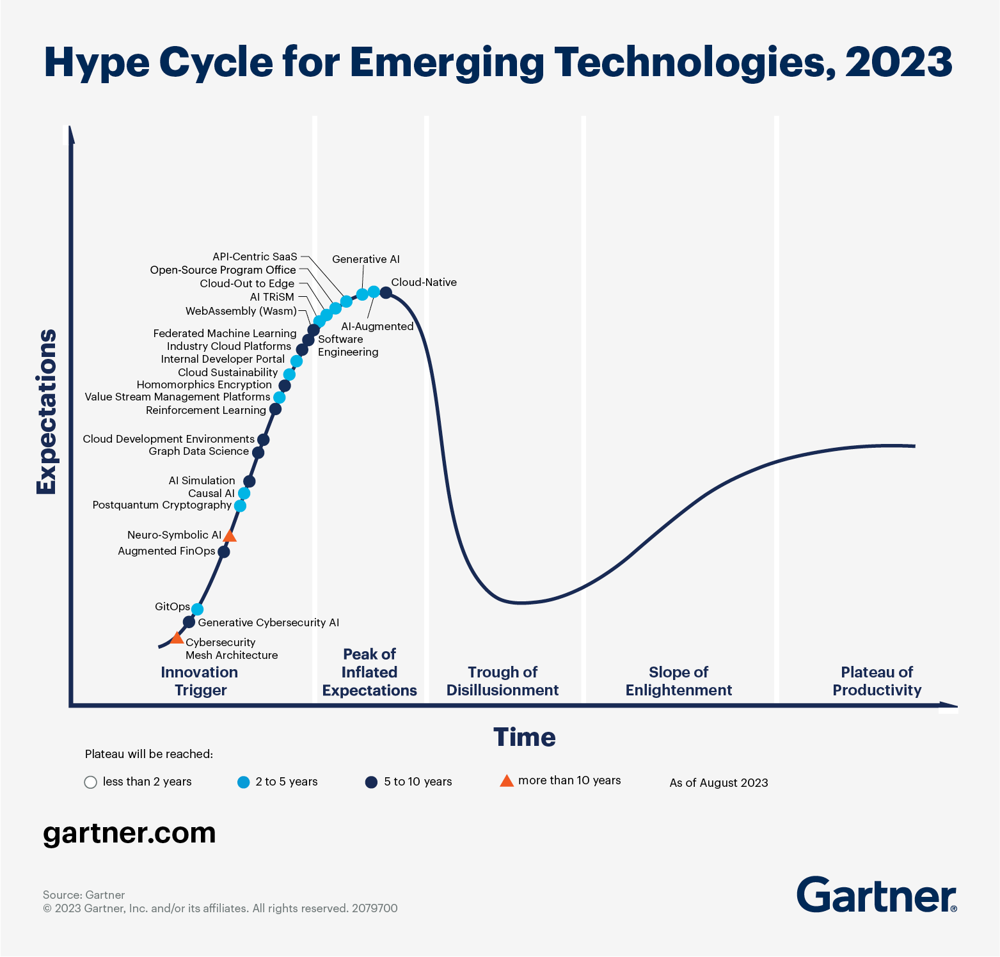

(...)
"At what price would I have refused to pay? $50? $70? While the cutoff is unclear, $34 wasn’t enough. I glumly handed over my credit card, and got even glummer when we discovered that the flavor was mediocre, too. My ice cream was none too sweet, and according to my son and daughter, the bobas tasted 'funny.'[...] Most people would blame the free market for the bad result. I, in contrast, blame myself. [...] For all their wonder, free markets aren’t wonderful enough to protect people from lack of common sense. If consumers place orders without checking prices, then cough up whatever vendors ask after the fact, the outcome will be poor."
[Anatomy of a Rip-Off, 2024]
In 2019, WeWork raised $1 billion from Softbank, raising its equity valuation to $47 billion. In 2023, WeWork declared bankruptcy, reducing its equity valuation to $0. WeWork founder Adam Neumann walked away with $1.7 billion in stock sales and non-recourse loans [Adam Neumann Wants We Back, 2024]. Start-up unicorns Uber, Lyft, WeWork, Pinterest, and Snapchat have consistently failed to be profitable, with Uber's cumulative losses approaching $25 billion. In other cases, as in Theranos, Luckin Coffee, and Wirecard, start-ups commited outright fraud. [The Crisis of Venture Capital, 2021]
The truth of economics is that resources are scarce. Therefore the job of economic actors including firms and investors is to usefully allocate those scarce resources. When hype substitutes judgement of profit, potential, and loss, billions of dollars and labout hours are not invested into the real innovation that makes economies grow.
Regular consumers of financial news may have the impression, as I have, that hypes of firms with bad fundamentals are becoming increasingly common over time. But media attention is often a poor measure of truth. Have firm founders and investors actually become more prone to following hypes over time? This paper attempts to answer the question with a panel regression of firm founding and funding data from Crunchbase, between the years 1960 and 2019. Hype is modelled as the response parameter $\beta_{i,t}$, of firm founders and investors to an industry's potential, which is modelled as growth in the previous period. If growth in period A and period B are the same, we would expect the growth in period A+1 and period B+1 to also be the same if the response parameter is constant.
Using the above model, I found that (...)
To describe the change in the dynamics of hypes over time, we must first describe what hypes are.
Hypes occur when technological innovation, regulatory changes, or other historical discontinuities cause new possibilities to exist in a field, drawing entrepreneurs and investors to enter the field[Theory of Economic Development, 1934]. They are therefore a natural and often positive force in technological development, driving funding of further innovation and building agglomerative communities of practitioners[Designing The Future, 1999]. But when the underlying promise of a hype is false, resources are wasted on non-productive investments[Concrete Economics, 2016]. Even when the underlying promise of a hype is true, but is not ready to be realised, disappointment can cause a backlash against a field, harming its nascent development[Avoiding Another AI Winter].
["The conditions under which entrepreneurs may appear - neglecting the general economic and social conditions of the competitive economy - [...] may be briefly and incompletely formulated as the existence of new possibilities more advantageous from the private economic standpoint - a condition which must always be fulfilled; the limited accessibility of these possibilities because of the personal qualifications and external circumstances which are necessary; and an economic situation which allows tolerably reliable calculation. Why entrepreneurs appear under those conditions is [...] the fact that anyone seizes a gain when it is immediately before his eyes"]
I will draw a distinction here between bubbles and hypes, though the term 'bubble' is often also used to describe what I will term a 'hype'. I will use the definition of a bubble as a deviation of asset prices from fundamentals, and separately define hype more broadly as a short-term, sharp rise of some expression of positive expectations - which may or may not be based on fundamentals - followed by a sharp fall. I draw this distinction because in my analysis, I will not attempt to control for fundamentals such as profit. This is because the data I use includes a wide range of industries, and would require much more detailed analysis of heterogenous fundamentals before they can be taken into account.
My justification for not doing fundamentals analysis is two-fold. First, I believe it is reasonable to assume that any trend in hype found across a wide range of industries would be independent of industry-specific fundamentals. If we further establish that there has not been an a matching trend in returns on investment over time, it is reasonable to state that any trend in hype is at least somewhat suspect from a fundamentals perspective. Given that there is some indication that returns on investment have been decreasing over time (...)
Second, hype, or exuberance, has been studied as an explosive autoregressive process without reference to fundamentals in other contexts, such as exchange rates[Are There Bubbles In Exchange Rates?, 2017] and stock prices[Explosive Behaviour In The 1990s NASDAQ, 2011]. And regardless of whether a particular hype is well-justified, understanding the dynamics and changes in dynamics of hype is empirically useful. If hype has indeed been "speeding up", one possible outcome is that the startup ecosystem becomes more unstable, as money lurches from one industry to another.
Describing the behaviour of hypes is also an industry on it's own. Gartner, one of the leading consulting firms on technological strategy, with an revenue of $5.1 billion as of 2023, uses its hype cycle model to advise the R&D decisions of large companies[Scrutinising Gartner's Hype Cycle Approach, 2010]. Gartner's hype cycle model describes interest in a technology as driven separately by a bell curve unfounded hype and an s-curve of technology maturity. When combined, the curves produce a hype cycle with a peak of inflated expectations as hype rises, a trough of disillusionment as hype falls before a technology is mature enough for mass adoption, and a slower rise to a plateaus of productivity as the technology finally matures.
While the model is of questionable reliability, with technologies disappearing from the model between years[Scrutinising Gartner's Hype Cycle Approach, 2010], I agree with its use as a conceptual baseline to deviate from in the hype dynamics literature.
The hype dynamics literature is unfortunately fairly limited.
[The Sociology Of Expectations In Science And Technology, 2006] outlines the importance of expectations for technological innovation, where there isn't a clear distinction between hype and underlying fundamentals, and where evaluating an unrealised technology often involves realising said technology. The authors state that expressions of future expectations, rather than functioning as purely honest descriptions of truth, are used strategically to guide technical and scientific activity; attract outside interest and investment; justify the production of measurements, calculations, tests, and pilot projects; calibrate beliefs about opportunities and risks; and generally coordinate activities between disparate actors.
[Designing The Future, 1999] provides a case study of the US Defense Advanced Research Projects Agency (DARPA) strategically using expectations in an attempt to establish the field of neural computing/neural networks. The case study describes DARPA canvassing research activities in neural computing and inviting a broad cross-section of corporate, military, and civilian technical decision makers to learn about the new field, culminating in a report published in 1988[]. This report hyped the field through such claims as neural computing representing "the dawn of a new era in computers", as well as referencing growing interest in the field from conferences, start-ups, venture capital, nations, and Nobel Laureates. It is of interest to note that the report also attempted to qualify its own hype, to avoid a repeat of the 1970s and 1980s 'AI winter', where high public expectations preceded a backlash from investors and funding agencies as the AI technology of the time failed to live up to expectations.
[With the benefit of hindsight, I will note that AlphaGo's victory over Lee Sedol in Go and the public release of ChatGPT 3.5, happened in 2016 and 2022 respectively. Both events are generally considered milestones in AI development [The Mystery of Go, 1965], and both AIs used forms of neural networks.]
[Avoiding Another AI Winter, 2010] argues that the AI winter was a confluence of multiple factors resulting in a disproportionately strong backlash. DARPA, after a period of significant funding for US-based AI research, experienced a change in management, who felt other fields deserved a chance at funding, such as the emerging area of supercomputing. At the same time, the Lighthill Report[Lighthill Report, 1973], commissioned by the United Kingdom's Science Research Council, negatively reviewed the state of AI progress which led to cuts of AI research funding in the UK and further cuts in the US. Hendley argues that these funding cuts in the 1970s resulted in a lack of new research available for transition to industry in the 1980s, which was then interpreted as the failure of commercialisation of the field.
[What Happens After A Hype, 2010] describes a framework of hype that distinguished between media activities, as well as different types of expectation: project-specific expectations, general technological expectations, and broader social framing such as ethical debates. It describes hype around stationary fuel cells in Germany, using German language newspapers, finding that while there was hype and disappointment of media attention and general expectations, positive social framing of fuel cell technology limited the negative effect of disappointment on innovative activities. [Comparing Technological Hype Cycles, 2013] uses this framework and empirically describes differences in hype dynamics of three technologies using quantitative and qualitative analysis of New York Times articles: voice over internet protocol (VoIP), gene therapy, and high temperature superconductivity, finding that (...).
Other literature provide useful context for interpretation of hype. Well-founded hype, directed on the basis on highly technical feasibility studies such as in the DARPA neural computing report should not be treated the same as speculative hype with weak empirical basis. It is difficult to evaluate whether a technology will ultimately prove fruitful and when - five decades passed between the Lighthill report declaring the failure of AI research and the public release of ChatGPT 3.5 - but it should not be impossible to determine WeWork was fundamentally a real-estate company and Uber was fundamentally a taxi-service company, with fundamentally the same cost structures [What's Behind Technological Hype, 2019]. Technology does not have to be 'soft' to be overhyped. Hyperloops [The Hyperloop Is Dead For Real This Time], which are faster but more expensive than already expensive high-speed magnetic levitation trains, provide an example of overhyped 'hard' technology and a regular reminder that 'better' technologies do not necessarily justify their added costs [This plane could cross the Atlantic in 3.5 hours. Why did it fail?, 2016].
[Killing The Golden Goose, 2015] describes the decline in scientific research by large firms between 1980 and 2007, finding that publications by scientists in large firms, weighted by citation count, have declined across a range of industries; the premium of publications in the acquisition price of firms have decreased; and publications by scientists acquired by large firms have decreased. It attributes this decline not to a decline of the usefulness of scientific research to innovation, but to increased global competition and narrower firm scope. The authors situate the decline in scientific research by large firms within a broader literature describing a strategic shift by firms since the 1980s, from in-house research to outsourced research, through a mix of contracts, licences, alliances, and acquisitions with universities and start-ups, diverting resources from research to their theoretical advantage in large scale development and commercialisation. [The Changing Technology of Technological Change, 1994] explains the shift as improved scientific understanding and instrumentation allowing innovation to be developed through the application of abstract knowledge, rather than trial-and-error experimentation. Innovation developed through trial-and-error is sensitive to local context and tacit knowledge. The authors give the example of the Bessemeer steel-making process, which did not work well when first adapted to Britain, where the ores used lacked the acidic medium the process required. By contrast, innovation developed on the basis of abstract knowledge is easier to replicate in different contexts, allowing for the division of innovative labour.
The changes in the structure of innovation must be contextualised with the apparent decline in the scientific and technological capability of public and private actors in the United States since the 1970s, which is the grist of many publications in recent years. [Is the Rate of Scientific Progress Slowing Down?, 2016] summarise studies on the decline in productivity growth in the United State since the 1970s, observing that total factor productivity (TFP) growth averaged 2-3% per year from 1919 to 1948, around 2% from 1948 to 1973, then declining after 1973 to an average of about 0.5% per year. This increased briefly to 2% per year in the mid-1990s to early 2000s, before falling again to less than 1% per year. The authors also address concerns that TFP measures, and the GDP measures they are based off of, underestimate gains in output and welfare from internet services, as these services often involve the purchase of goods, require the purchase of electronic devices, or otherwise displace spending from one sector to another; all behaviours which would be captured by GDP measure. However, the authors also caution that the concept of TFP is itself often not well-defined. A hospital equipping its surgeons with iPads increase output, but the gain is attributed to capital input rather than scientific and technological advance.
[Concrete Economics, 2016] frames the decline in productivity growth in the United States with the financialisation of the US economy, with profits to financial firms increasing from 10-15% of total profits of publicly held corporations in the first four post-war decades, to a peak of close to 50% in 2007, and only declining slightly since. The book further claims that this percentage understates of the financialisation of the US economy, as it excludes non-publicaly held financial firms, financing subdiaries of industrial firms, and big law and accounting firms that are a part of finance but categorised as professional services. [The Financialisation Of Tech, 2022] supports the observation of increasing financialisation of the US economy, describing a flow of capital and talent from investment banking to the tech industry in the aftermath of the Great Financial Crisis of 2007, followed by the re-emergence of finance in technology; with global fintech funding jumping from $49 billion across 3,300 deals in 2020 to $131 billion across 4.9,000 deals in 2021 [The berserk pace of fintech investing outshines the global VC boom, 2022]. Cryptocurrency and blockchain technology, which has no feasible use case in the foreseeable future[] received $33 billion of investment from venture capitalists in 2021[Report: VCs Invested $33B in Crypto and Blockchain Startups in 2021, 2022].
[Are Ideas Getting Harder To Find?, 2017] is another paper in the vein of decreasing scientific output and productivity growth. Referring to the idea production function often used in growth models, of the form total factor productivity growth = research productivity * research input, the paper finds that research productivity has been declining between 1970 and 2010, as total factor productivity has been constant or even declining, while research inputs in the form of researchers have been increasing; with the result holding true in specific industries and in aggregate. The aggregate result is used to reject the hypothesis that although productivity growth is declining for established technologies, it is possible that productivity growth is occuring in entirely new domains, which would should show in aggregate productivity growth. The paper provides Moore's Law as a concrete example of this decline, with the number of researchers required to double chip density being 18-fold more when the paper was written than in the 1970s.
Whether research productivity is actually declining is critical to interpreting the behaviour of research investment. If larger investments are required to fund innovation for fundamental physical reasons relating to declining marginal returns and the S-curve of innovation, there is a reasonable argument for increased hype to motivate larger investments. The idea that all low-hanging fruit has been picked is commonly expressed in such quotes as "The days when a doctoral student could be the sole author of four revolutionary papers while working full time as an assistant examiner at a patent office — as Einstein did in 1905 — are probably long gone. Natural sciences have become so big, and the knowledge base so complex and specialized, that much of the cutting-edge work these days tends to emerge from large, well-funded collaborative teams involving many contributors" [Scientific Genius is Extinct, 2013].
[Ideas aren’t getting harder to find and anyone who tells you otherwise is a coward and I will fight them, 2022] argues that the low-hanging fruit concept is flawed, and that all ideas seem easy and low-hanging fruit in retrospect. Mastroianni quotes Nobel Prize winning physicist Max Plank's recollection of a professor's claim in the 1890s, that "the system as a whole stood there fairly secured, and theoretical physics approached visibly that degree of perfection which, for example, geometry has had already for centuries." Mastroianni points instead to structural issues in academia, where increased hypercompetitiveness in undergraduate admissions, PhD acceptances, and the academic job market, as well as the adoption of peer-review since the 1970s created an environment which favoured incremental over innovative science. [How Life Sciences Actually Work: Findings of a Year-Long Investigation, 2019] reports his study of life sciences research using interviews of 60 grad students, post-docs, principle investigators (PIs), grant funders, and investors, finding similar harms of career track rigidity and peer review on innovative research.
Structural issues resulting from institutional decay, rather than genuine declines in research productivity, are the alternate explanation to declines in productivity growth. If structural issues, and not research productivity declines are the cause of productivity growth declines, it is probable that hype-driven increases in funding will only exacerbate existing issues, with increases in funding absorbed by and sustaining unproductive uses. It may be observed that K-through-12 and undergraduate education are services with little dependence on research productivity, yet inflation-adjusted expenditures per pupil in public elementary and secondary schools have increased from $10,000 in 1978 to $16,000 in 2020 [Digest of Education Statistics, 2023], and inflation-adjusted expenditures for tuition, fees, and room and board have increased from $12,000 in 1963 to to $27,000 in 2022 [Digest of Education Statistics, 2023]. In fact, the increase in the cost of university education is at least partially attributable to an increase in available capital, with [Credit Supply and the Rise in College Tuition: Evidence from the Expansion in Federal Student Aid Programs, 2017] finding that 60% of student loan cap increases are passed through to tuition costs, using variation in student credit supply that resulted from legislative changes.
[Nonprofits are sapping the progressive project, 2023], using Federal Reserve Economic Data (FRED) data, argues that US government spending had always grown with US government spending on the government workforce until the mid-1970s, explaining the divergence as outsourcing to for-profit and non-profit private sector actors. Smith estimates that 13% of all government spending was spent via non-profits, compared to 18% spent on government workers. Smith further argues that when state capacity is lost, government bidding processes are unable to control costs[] due to the inability to determine whether low bids are good quality at a low price, or simply low quality at a low price. The loss of state capacity[] in the United States has resulted in: an inability to build new housing, with new privately-owned units being built across the US at a rate of 1.3 million units a year in 2023, compared to 2.2 million units at the last peak of 2005 [The Build-Nothing Country, 2023]; an inability to build transportation infrastructure, with a $535,000 proposal for utilitarian stations for the Massachusetts Bay Transportation Authority’s (MBTA) Green Line Extension (GLX) dramatically rising to $58 million per station after each stakeholder sought to extract value from the project [The Boston Case: The Story of the Green Line Extension, 2020]; and an inability to build renewable energy, with 8100 wind, solar, and battery projects waiting for approval to connect to the electrical grid in 2021, and the approval process taking four years on average, twice as long as a decade ago[The U.S. Has Billions for Wind and Solar Projects. Good Luck Plugging Them In., 2023].
Private actors have not conversely improved decision-making ability as public decision-making ability has declined, demonstrated by the previously described increased investment in non-profitable companies, as well as the previously described decline in productivity growth. [On Cultures That Build, 2020] argues that there has been a cultural shift in change-making behaviours in the United States. Greer observes that there was a fast and coordinated response from all levels of society to the flu pandemic of the 1910s, forming dozens of local emergency response committees with members from local government and federal public health institutions, as well as local businesses, social organisations, and religious organisations. Greer argues that this decision-making initiative has since been passed upwards to larger, more impersonal bureucracies, using the example of increasing student to school board ratios dimishing the ability individuals to partake in the decision-making process.
The final paper I wish to discuss is [A Tale of Two Crises, 2023]. (...)
[Digest of Education Statistics, 2023] https://nces.ed.gov/programs/digest/d23/tables/dt23_236.15.asp?current=yes [Digest of Education Statistics, 2023] https://nces.ed.gov/programs/digest/d23/tables/dt23_330.10.asp?current=yes
Firm and funding data was obtained from Crunchbase. Federal funds rate data was sourced from CEIC. The firm dataset includes all 1.2 million US firms available from Crunchbase, filtered to only include for-profit companies founded between 1960 and 2023 (inclusive), reducing the data set to (...) firms. Where the founding date was not available from Crunchbase, I supplemented the data with the date of domain registration from WHOIS, a public protocol to access domain registration details. The funding data set includes all 620k funding rounds available from Crunchbase, filtered to only include funding rounds between 1960 and 2023, reducing the dataset to (...) funding rounds. Since we only start to have >100 funding rounds a year in 1994, I will also perform the regression only including years 1994-2023 as a robustness check.
The start year of 1960 was chosen as the earliest 'round' year where macroeconomic data was available. The end year was chosen to exclude 2024, which is an incomplete year. Some consideration was given as to whether to include the COVID-19 period from 2019-2023, which resulted in a collapse of firm founding independently of hype dynamics. I ultimately chose to include it as funding rounds increased throughout this period, and many of the perceived excesses of start-up hype happened during this period, including Peloton, Zoom, (...)[]. As a robustness check, I will also perform the regression excluding 2019-2023.


The classification of industries and "industry groups" (Groups of related industries, e.g. Biotechnology and Genetics are in the same industry group) was also obtained from Crunchbase. Crunchbase's classification allows for and even encourages the inclusion of a firm into multiple industries and industry groups. I do not control for this, so it's possible that any observed change over time is the result of changes in labelling over time. A possible future approach is to use The Refinitiv Business Classification instead, which assigns only one industry per company based on factors such as main source of revenue[A Tale of Two Crises, 2023]. To avoid potential issues of sparse data for specific industries, I will use industry group as the grouping variable, as we have 49 industry groups compared to (...) industries. As a robustness check, I will also perform the regression with industry as the grouping variable.
(...)
Panel regression was done on both firm and funding data using a calculated variable $\beta_{i,t}$ as the variable of interest. $\beta_{i,t}$ was calculated as the multiple of the previous growth rate $g_{ig, t-1}$ in terms of firms founded or funding rounds announced in an industry group in a year to get the current growth rate $g_{ig, t}$: $g_{ig, t} = \beta_{ig, t} g_{ig, t-1}$. $\beta_{i,t}$ represents the responsiveness of firm founders or investors to the potential of an industry group, represented by its growth rate in the previous period. This construction was necessary to model the responsiveness as a potentially changeable variable, rather than an average over time. High positive $\beta_{ig, t}$s represent strong "trend-following" in either positive or negative growth, while high negative $\beta_{ig, t}$s represent strong corrections. Since a sharp peak and a sharp crash are both symptoms of hype, but a sharp peak followed by sharp crash will result in an average $\beta_{ig, t}$ of 0, I will use the absolute value of $\beta_{ig, t}$ instead. As a robustness check, I will also perform the regression using raw values.
This is the final form of the panel regression: $$\beta_{i,t} = c + \alpha_{i} + \gamma t + \delta r_t + \epsilon_{i, t}$$ The growth volatility \beta_{i,t} of an industry in each year will be regressed, a time variable t and a federal funds rate variable $r_t$ as a control, with a constant $c$ and an industry fixed effect $\alpha_{i}$ also specified. Year is normalised to be the year a firm is founded or a funding round announced minus the start year. This allows the coefficient of year to be interpretable as the effect of each additional year from the start year on the response parameter. I use industry fixed effects instead of coefficients of each industry since the growth volatity of each industry differs significantly between industries, so the difference in effect of an industry from a reference industry will not be interpretable.
Table 1 and Table 2 are the results of the panel regressions on growth volatility $\beta_{i,t}$ of firms founded and funding rounds announced respectively. Note that the year coefficients are larger than they initially seem. A year coefficient of 0.0033, as in Table 2, will be multiplied by the 63 year difference between the start and end years. This gives a total effect of 0.207 in the last period compared to the first period. For reference, some of the industries with the highest median growth volatility for funding rounds announced are Ethereum at 0.288, Bitcoin at 0.253, and Cannabis at 0.175, with a median of medians of 0.0469.
For firms founded, the industries with the highest median growth volatility are Advertising at 0.101, Dental at 0.0979, and Publishing at 0.0956, with a median of medians of 0.0357.
The federal funds rate coefficients are small for both firms founded and funding rounds announced, and removing the federal funds rate control from the regressions do not significantly alter the results. This finding is slightly strange since we might expect the federal funds rate to affect money supply and therefore willingness to invest. This result seems more reasonable when we plot the federal funds rate against time. There was a clear change in interest rate regime between the period 1960-1980, where interest rates were consistently increasing, and the period 1980-2023, where interest rates were consistently decreasing.

If no or few industries have such strong trends in growth volatility, the correlation of the federal funds rate to growth volatility will be weak. Therefore the small federal funds rate coefficients suggest that the internal dynamics of each industry matter more to growth volatility than macroeconomic factors like federal funds rates.
The $R^2$ of the regressions are relatively small, though I would argue still large enough to be empirically meaningful, at 0.085 for firms founded and 0.113 for funding rounds announced.
Table 1: Firms Founded (1960-2023)
==============================================================================
Parameter Std. Err. T-stat P-value Lower CI Upper CI
------------------------------------------------------------------------------
const 0.0280 0.0014 19.977 0.0000 0.0253 0.0308
year_norm 0.0007 3.377e-05 19.846 0.0000 0.0006 0.0007
fed_rate -0.0001 9.237e-05 -1.1982 0.2308 -0.0003 7.037e-05
==============================================================================
R-squared: 0.0850
The year coefficient is 0.0007 at p < 0.05, for a total effect of 0.0441 between 1960 and 2023. We find an increase in volatility in firms founded in this period, though not as strongly as funding rounds announced.
Table 2: Funding Rounds Announced (1960-2023)
==============================================================================
Parameter Std. Err. T-stat P-value Lower CI Upper CI
------------------------------------------------------------------------------
const -0.1050 0.0076 -13.905 0.0000 -0.1198 -0.0902
year_norm 0.0033 0.0001 23.704 0.0000 0.0030 0.0036
fed_rate 0.0008 0.0003 2.7866 0.0053 0.0002 0.0014
==============================================================================
R-squared: 0.1137
The year coefficient is 0.0033 at p < 0.05, for a total effect of 0.207 between 1960 and 2023. We find an increase in volatility in funding rounds announced in this period.
Table 3: Firms Founded (1960-2018)
==============================================================================
Parameter Std. Err. T-stat P-value Lower CI Upper CI
------------------------------------------------------------------------------
const 0.0264 0.0014 19.335 0.0000 0.0237 0.0290
year_norm 0.0007 3.47e-05 21.007 0.0000 0.0007 0.0008
fed_rate -6.578e-05 9.178e-05 -0.7167 0.4735 -0.0002 0.0001
==============================================================================
R-squared: 0.0946
The year coefficient is 0.0007 at p < 0.05, for a total effect of 0.406 between 1960 and 2018. We find an increase in volatility in firms founded in this period.
Table 4: Funding Rounds Announced (1960-2018), Grouped by Industry
==============================================================================
Parameter Std. Err. T-stat P-value Lower CI Upper CI
------------------------------------------------------------------------------
const -0.0546 0.0087 -6.2649 0.0000 -0.0716 -0.0375
year_norm 0.0025 0.0002 14.504 0.0000 0.0021 0.0028
fed_rate -0.0030 0.0003 -9.9727 0.0000 -0.0036 -0.0024
==============================================================================
R-squared: 0.0819
The year coefficient is 0.0025 at p < 0.05, for a total effect of 0.145 between 1960 and 2018. We find an increase in volatility in funding rounds announced in this period.
Table 5: Firms Founded (1994-2023)
==============================================================================
Parameter Std. Err. T-stat P-value Lower CI Upper CI
------------------------------------------------------------------------------
const 0.0529 0.0021 24.617 0.0000 0.0487 0.0571
year_norm 0.0004 0.0001 4.1199 0.0000 0.0002 0.0007
fed_rate -0.0007 0.0003 -2.5711 0.0101 -0.0012 -0.0002
==============================================================================
R-squared: 0.0121
The year coefficient is 0.0004 at p < 0.05, for a total effect of 0.0116 between 1994 and 2023. We find an increase in volatility in firms founded in this period.
Table 6: Funding Rounds Announced (1994-2023), Grouped by Industry
==============================================================================
Parameter Std. Err. T-stat P-value Lower CI Upper CI
------------------------------------------------------------------------------
const 0.0167 0.0037 4.4672 0.0000 0.0094 0.0241
year_norm 0.0027 0.0002 13.551 0.0000 0.0023 0.0031
fed_rate 0.0023 0.0003 6.5702 0.0000 0.0016 0.0029
==============================================================================
R-squared: 0.0648
The year coefficient is 0.0027 at p < 0.05, for a total effect of 0.0783 between 1994 and 2023. We find an increase in volatility in funding rounds announced in this period.
For both firms founded and funding rounds, the year coefficient and the $R^2$, which suggests that a large part of the effect found in previous regressions came from years between 1960 and 1993, where less data was available and estimates are probably less reliable. I would therefore conclude the results of the restricted regressions between 1994-2023 are closest to the true effects. Since the median of medians do not change significantly between the non-restricted and the restricted regressions, we may conclude that there is still a relatively strong time effect.
The limitations of the data and methodology chosen are as follows:
(...)
Appendix 1: Firms Founded (1960-2023), Grouped by Industry Group
==============================================================================
Parameter Std. Err. T-stat P-value Lower CI Upper CI
------------------------------------------------------------------------------
const 0.0830 0.0082 10.114 0.0000 0.0669 0.0991
year_norm 8.698e-05 0.0002 0.3732 0.7090 -0.0004 0.0005
fed_rate 0.0007 0.0004 1.9116 0.0560 -1.821e-05 0.0014
==============================================================================
R-squared: 0.0011
The year coefficient is close to 0. We do not find any increase in volatility in firms founded between 1960 and 2023 when firms are grouped by industry group.
Appendix 2: Funding Rounds Announced (1960-2023), Grouped by Industry Group
==============================================================================
Parameter Std. Err. T-stat P-value Lower CI Upper CI
------------------------------------------------------------------------------
const 0.1258 0.0285 4.4111 0.0000 0.0699 0.1818
year_norm 0.0006 0.0005 1.1092 0.2675 -0.0005 0.0016
fed_rate -0.0076 0.0014 -5.4448 0.0000 -0.0103 -0.0048
==============================================================================
squared: 0.0254
The year coefficient is 0.0006 at p > 0.05. We do not find any increase in volatility in funding rounds announced between 1960 and 2023 when funding rounds are grouped by industry group.